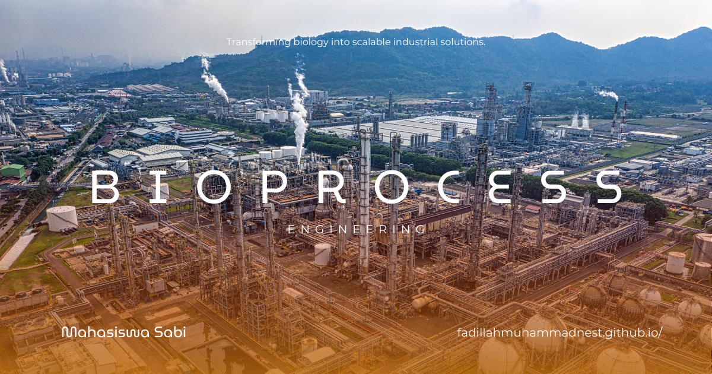

Modifikasi Genetik Makhluk Hidup
Modifikasi Genetik Makhluk Hidup dalam Teknik Bioproses: Merancang Organisme untuk Bioproduksi yang Lebih Unggul
Modifikasi Genetik Makhluk Hidup merupakan mata kuliah yang mempelajari prinsip dan penerapan perubahan materi genetik pada organisme untuk menghasilkan karakteristik atau fungsi tertentu. Dalam Teknik Bioproses, modifikasi genetik menjadi dasar penting untuk mengembangkan mikroorganisme, sel, atau organisme lain sebagai cell factory yang mampu menghasilkan produk seperti enzim, biofuel, bahan pangan, obat, biomaterial, dan senyawa bernilai tambah. Perkembangan synthetic biology semakin memperkuat pendekatan ini dengan menggabungkan prinsip biologi dan rekayasa untuk merancang sistem biologis dengan fungsi yang diinginkan. ([springer.com](https://link.springer.com/article/10.1007/s44340-025-00010-5?utm_source=chatgpt.com))
Fokus yang Dipelajari
Mahasiswa mempelajari konsep dasar genetika molekuler dan teknologi rekayasa genetik serta penerapannya dalam pengembangan bioproses. Beberapa topik yang dapat dipelajari meliputi:
- Struktur dan ekspresi gen serta hubungan gen dengan karakteristik organisme.
- Rekayasa DNA dan prinsip dasar transfer atau perubahan materi genetik.
- Recombinant DNA technology untuk menghasilkan protein atau senyawa tertentu.
- Genome editing menggunakan teknologi seperti CRISPR-Cas untuk mengubah bagian genom secara lebih terarah.
- Metabolic engineering untuk mengarahkan jalur metabolisme agar menghasilkan produk yang diinginkan.
- Strain engineering untuk meningkatkan produktivitas, stabilitas, atau karakteristik mikroorganisme.
- Bioinformatika dan analisis data genetik untuk mendukung perancangan serta evaluasi modifikasi genetik.
Perannya dalam Teknik Bioproses
Mata kuliah ini berperan menghubungkan rekayasa genetika dengan pengembangan proses produksi berbasis biologis. Mikroorganisme dapat direkayasa agar menghasilkan produk tertentu dengan produktivitas lebih tinggi, menggunakan bahan baku yang lebih efisien, atau memiliki karakteristik yang sesuai dengan kebutuhan proses. Pendekatan tersebut mendukung pengembangan microbial cell factory, biomanufaktur, dan proses produksi berbasis fermentasi. ([pubmed.ncbi.nlm.nih.gov](https://pubmed.ncbi.nlm.nih.gov/39592270/?utm_source=chatgpt.com))
Kegunaan dalam Masyarakat, Riset, dan Pekerjaan
Modifikasi genetik dapat dimanfaatkan dalam pengembangan obat, vaksin, enzim, pangan, biofuel, biomaterial, bahan kimia berbasis hayati, dan produk industri lainnya. Dalam riset Teknik Bioproses, teknologi ini dapat digunakan untuk meningkatkan produksi metabolit, mengoptimalkan jalur metabolik, mengembangkan mikroorganisme penghasil protein rekombinan, serta menghasilkan strain yang lebih sesuai untuk proses fermentasi.
Kompetensi ini relevan untuk pekerjaan seperti Bioprocess Engineer, Genetic Engineering Researcher, Synthetic Biology Scientist, R&D Scientist, Biotechnology Researcher, Process Development Engineer, dan Biomanufacturing Specialist.
Tren Modifikasi Genetik Saat Ini
Salah satu tren utama adalah perkembangan CRISPR dan genome editing yang memungkinkan perubahan DNA dilakukan secara semakin terarah. Teknologi ini tidak hanya digunakan dalam penelitian kesehatan, tetapi juga dalam pengembangan organisme untuk biomanufaktur, pertanian, pangan, dan produksi bahan berbasis hayati. Pada saat yang sama, penerapan genome editing membutuhkan evaluasi keamanan dan pengawasan yang memadai. ([who.int](https://www.who.int/health-topics/human-genome-editing?utm_source=chatgpt.com))
Tren lainnya adalah berkembangnya synthetic biology dan metabolic engineering. Pendekatan ini tidak sekadar mengubah satu gen, tetapi dapat digunakan untuk merancang atau mengoptimalkan jaringan biologis sehingga organisme berfungsi sebagai platform produksi yang lebih terprediksi. Perkembangan tersebut semakin relevan dengan kebutuhan biomanufaktur dan pengembangan produk hayati. ([springer.com](https://link.springer.com/article/10.1007/s44340-025-00010-5?utm_source=chatgpt.com))
AI, bioinformatika, automated design, dan biomanufacturing juga menjadi arah perkembangan penting. Integrasi data genomik dengan komputasi dapat membantu proses desain strain, prediksi fungsi gen, dan optimasi sistem biologis. Infrastruktur biomanufaktur modern semakin membutuhkan integrasi antara rekayasa genetika, pemodelan, otomatisasi, dan teknologi pengolahan skala industri. ([pubmed.ncbi.nlm.nih.gov](https://pubmed.ncbi.nlm.nih.gov/39592270/?utm_source=chatgpt.com))
Selain kemampuan teknis, aspek biosafety, biosecurity, etika, dan regulasi semakin penting. WHO menekankan bahwa perkembangan teknologi genome editing perlu disertai tata kelola yang kuat karena dapat menimbulkan persoalan ilmiah, etika, sosial, dan hukum, terutama ketika teknologi diterapkan pada manusia. ([who.int](https://www.who.int/teams/health-ethics-governance/emerging-technologies/gene-editing?utm_source=chatgpt.com))
Kesimpulan
Modifikasi Genetik Makhluk Hidup dalam Teknik Bioproses membekali mahasiswa dengan pemahaman mengenai bagaimana materi genetik dapat dimanfaatkan untuk menghasilkan organisme dengan karakteristik yang mendukung kebutuhan bioproduksi. Dengan berkembangnya CRISPR, synthetic biology, metabolic engineering, AI, bioinformatika, dan biomanufaktur, bidang ini semakin penting dalam menciptakan proses biologis yang lebih produktif, presisi, efisien, dan inovatif, dengan tetap memperhatikan aspek keamanan, etika, dan regulasi.
Mahasiswa Sabi
©Repository Muhammad Surya Putra Fadillah